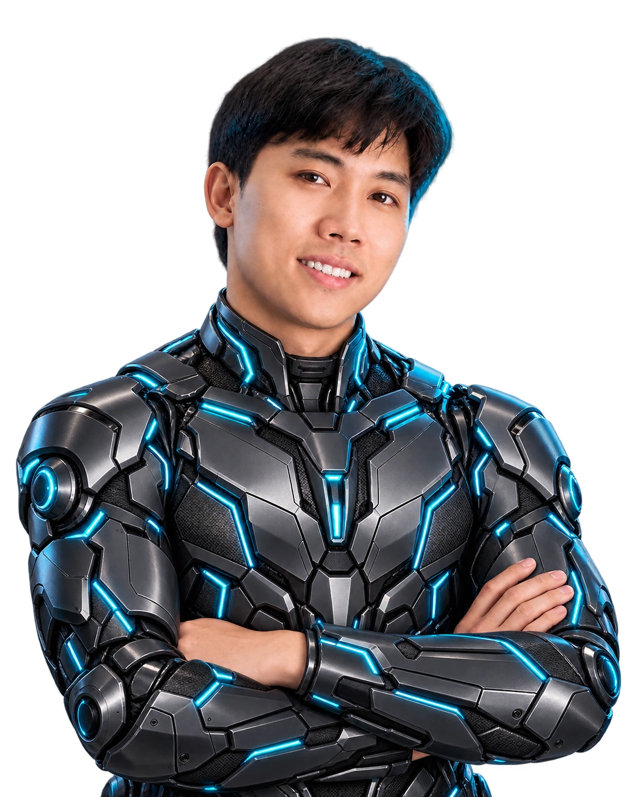

Lắng nghe
Thấu hiểu nhu cầu và bài toán.
Nhận dự án freelance · Part-time / Remote
Tôi là Dũng — kết nối kinh nghiệm kinh doanh thực tế với website, webapp và ứng dụng AI để giải quyết bài toán vận hành.

Tìm hiểu nhu cầu thực tế để xác định đúng bài toán cần giải quyết.
Chạm và di chuyển trên chân dung để khám phá
Tôi xuất phát từ kinh doanh, quản lý kho và vận hành. Chính những công việc đó giúp tôi nhìn thấy nhu cầu phía sau một website hay một phần mềm.
Hiện tôi phát triển website, webapp và các ứng dụng AI cho trường học, cửa hàng và thương hiệu nhỏ. Tôi quan tâm đến giải pháp dễ dùng, phù hợp nguồn lực và có thể tiếp tục vận hành sau khi bàn giao.
Xem hành trình của tôi ↓Những ý tưởng có giá trị bắt đầu bằng việc hiểu con người, công việc và nhu cầu thật.
Thấu hiểu nhu cầu và bài toán.
Tìm hướng giải quyết phù hợp.
Tạo trải nghiệm có thể sử dụng.
Từ website thương hiệu đến ứng dụng vận hành và nội dung AI. Mỗi dự án là một cách kết nối nhu cầu với công nghệ.
Mầm non Bình Minh
Chọn mũi tên để di chuyển · Chạm vào màn hình để khám phá
Kinh nghiệm kinh doanh và vận hành giúp tôi tiếp cận công nghệ từ nhu cầu sử dụng thực tế.
Phát triển website và webapp cho trường học, cửa hàng và thương hiệu nhỏ; ứng dụng AI trong nội dung và tự động hóa.
Trực tiếp kinh doanh và vận hành phân phối sơn, vật liệu xây dựng; tư vấn khách hàng và điều phối đội ngũ 3–5 người.
Tìm kiếm khách hàng, tư vấn condotel và căn hộ thương mại; đàm phán và chăm sóc sau giao dịch.
Theo dõi nhập – xuất, kiểm soát tồn kho và phối hợp nhân sự trong vận hành kho.
Kết hợp công nghệ, nội dung, kinh doanh và vận hành trong cùng một quá trình làm việc.
Chọn một nhóm để khám phá
Quản trị kinh doanh · Chuyên ngành Kế toán
Nền tảng phát triển Web
Hoàn thành nghĩa vụ quân sự
Bạn đang cần một website, ứng dụng vận hành hay nội dung AI?
Hãy chia sẻ bài toán của bạn để cùng tìm hướng thực hiện phù hợp.